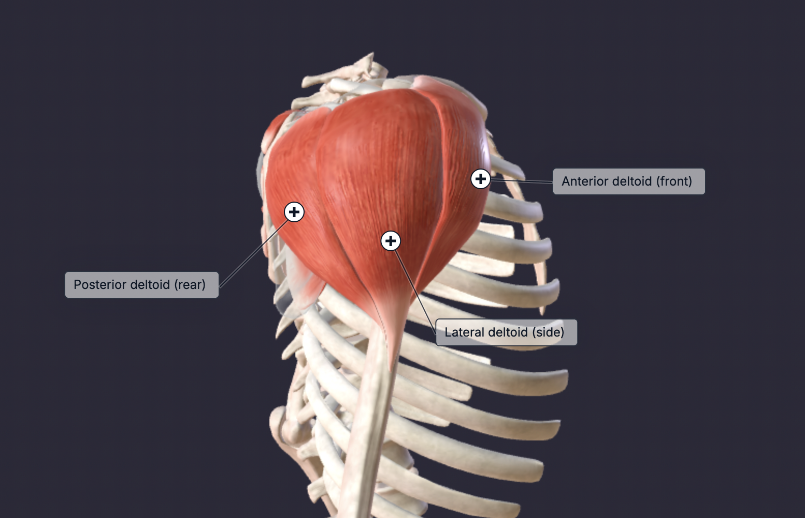

The deltoid is a large muscle that covers the shoulder joint. The deltoid consists of three main components, the anterior (front), lateral (side), and posterior (rear). The main function of the deltoid is shoulder abduction, flexion, and extension. The anterior head is responsible for flexion (raising the arm forward) and medial rotation. The lateral head is responsible for abduction, which is lifting the arm to the side. Finally, the posterior head is responsible for extension (moving the arm backward) and lateral rotation.
The exercises are divided by which head of the deltoid is being biased.
It's important to know that the posterior/rear delt is going to be worked during back exercises as well. A heavy row with your elbows flared will sufficiently hit the rear delts.
